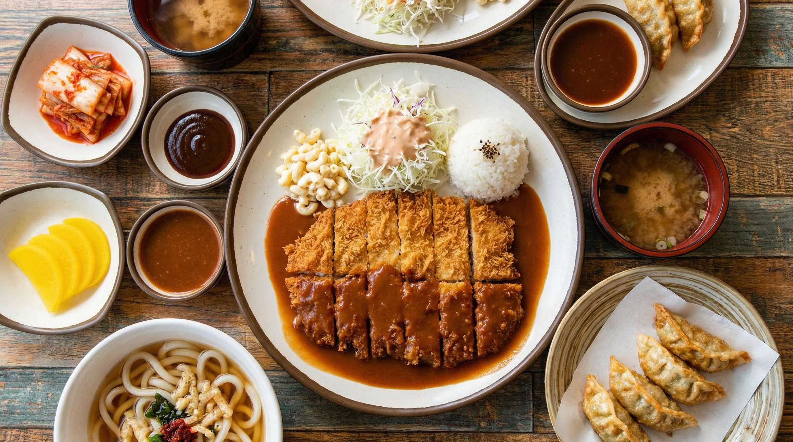

타협 없는 한 접시,
그것이 돈빠입니다
돈까스에 빠지다, 줄여서 '돈빠'. 이름처럼 우리는 돈까스 하나에만 집중합니다.
매일 아침 6시, 전국 물류센터에서 출발한 국내산 1등급 돼지고기가 각 매장에 도착합니다. 그 시각부터 주방에서는 고기를 손질하고, 빵가루를 직접 만들고, 소스를 준비합니다. 매일 반복되는 이 루틴이 돈빠의 맛을 지키는 방법입니다.
편리함보다 정직함을 선택했습니다. 냉동 식재료 대신 신선한 당일 식재료, 시판 빵가루 대신 직접 제조한 빵가루, 간편 소스 대신 직접 담근 특제 소스. 불편하지만 포기할 수 없는 것들입니다.

우리가 걸어온 시간
글로벌 진출 및 리브랜딩
브랜드 아이덴티티 강화 및 해외 1호점 오픈 준비. 프리미엄 돈까스의 세계화를 시작합니다.
직영 물류 센터 준공
전국 가맹점에 신선한 식자재를 매일 공급할 수 있는 첨단 물류 시스템을 구축했습니다.
전국 50호점 돌파
맛에 대한 고집을 인정받아 전국 주요 상권에 성공적으로 안착하며 성장을 가속화했습니다.
빙온 숙성법 특허 출원
돈까스에빠지다만의 독자적인 고기 숙성 기술을 개발하여 맛의 일관성을 확보했습니다.
타협하지 않는
세 가지 약속
최상급 원육
제주 청정 지역에서 자란 프리미엄 규격 돈육만을 선별합니다. 얼리지 않은 생고기의 신선함을 그대로 식탁까지 전달합니다.
48시간의 기다림
돈까스에빠지다만의 독자적인 빙온 숙성법으로 고기의 풍미를 극대화합니다. 기다림은 부드러운 육질의 비결입니다.
생 빵가루의 바삭함
매일 아침 구워낸 식빵으로 만든 생 빵가루를 사용합니다. 기름을 덜 흡수하여 끝까지 고소하고 바삭한 식감을 유지합니다.